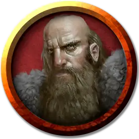

Шольдар Шольдарович
Szoldar Szoldarovich
Средний Гуманоид (Человек), нейтральный, именной НИП

Класс Доспеха 13 (кожаный доспех)
Хиты 16 (3к8 + 3)
Скорость 30 футов
| мод | спас | ||
|---|---|---|---|
| СИЛ | 11 | +0 | +0 |
| ЛОВ | 14 | +2 | +2 |
| ТЕЛ | 12 | +1 | +1 |
| мод | спас | ||
|---|---|---|---|
| ИНТ | 11 | +0 | +0 |
| МДР | 13 | +1 | +1 |
| ХАР | 11 | +0 | +0 |
Навыки Восприятие +5, Выживание +5, Природа +4, Скрытность +6
Чувства пассивное Восприятие 15
Языки Все
Опасность 1/2 (100 опыта)
Бонус мастерства +2
Особенности
Языки. Шольдар знает один любой язык, обычно Общий.
Острые зрение и слух. Шольдар совершает с преимуществом проверки Мудрости (Восприятие), полагающиеся на зрение или слух.
Действия
Мультиатака. Шольдар совершает две рукопашные атаки или две дальнобойные атаки.
Короткий меч. Рукопашная атака оружием: +4 к попаданию, досягаемость 5 футов, одна цель. Попадание: Колющий урон 5 (1к6 + 2).
Длинный лук. Дальнобойная атака оружием: +4 к попаданию, дистанция 150/600 футов, одна цель. Попадание: Колющий урон 6 (1к8 + 2).
Описание
Шольдар Шольдарович и Евгений Крушкин – местные охотники и завсегдатаи постоялого двора «Синяя Вода». Они охотятся волков и продают их мясо горожанам. Их работа опасная и кровавая. Оба мужчины хмурые, а в их глазах отчетливо видно беспокойство и бдительность.
Они суровые парни, и редко отказываются от возможности подзаработать. Если персонажи ищут проводников или информацию о землях Баровии, Шольдар и Евгений будут готовы им помочь. Они не боятся выйти за стены Валлаки днём и они знают леса и долину достаточно хорошо. Они готовы быть проводниками за 5 зм в день или рассказать о том, как добраться до каких-то важных мест за бесплатную выпивку. Они считают глупым отправляться в путь по «проклятым землям» ночью и не станут этого делать, если только их оплата не будет заоблачной (100 зм и более).
За редким исключением, когда ему есть что сказать, Шольдар бесцеремонно перебивает собеседников, тогда как Евгений обычно поддакивает своему другу более сдержано. На своём луке Шольдар отмечает зарубками каждого волка, которого он убил, а Евгений с каждым убитым волком добавляет новый клочок волчьей шкуры к своей волчьей накидке. Оба мужчины имеют семьи, но большинство времени проводят вместе, либо на постоялом дворе, топя свои печали, либо на охоте в лесу. Большинство волчьих голов, украшающих стены таверны, являются результатом их действий.